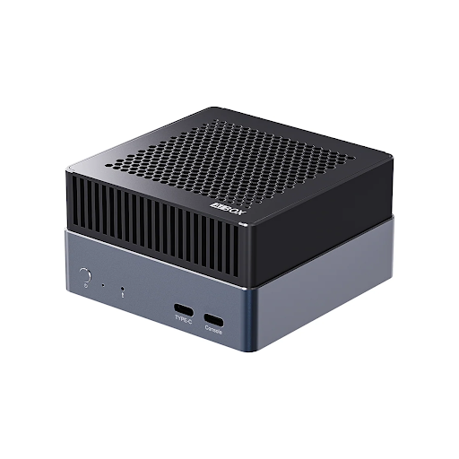
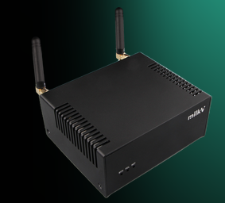
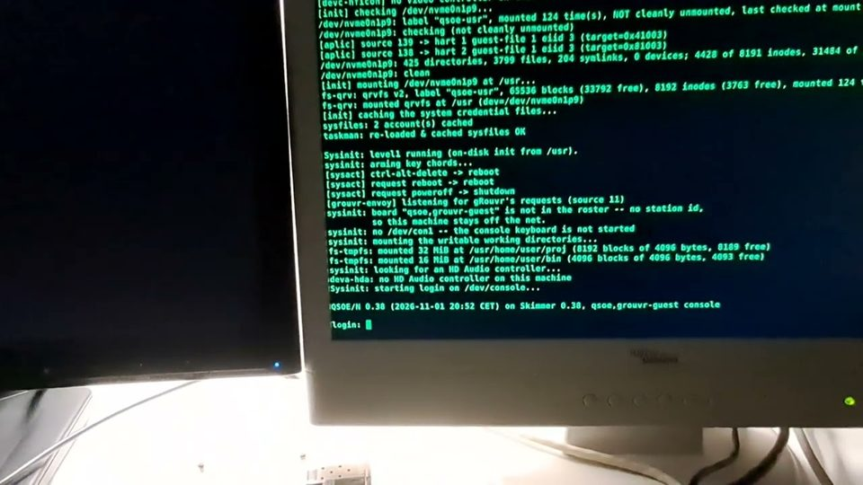

An open ISA
No license for the instruction set, no single owner, no single country. A machine expected to run for 15 years should not depend on one company's roadmap, or one government's decisions.
European RISC-V Industrial Computing Initiative
RVA23 silicon has arrived. The industrial computer built on it has not. ERICI coordinates a reference stack, from firmware to real-time and general-purpose operating systems: it fixes the interfaces between the layers and verifies that they boot together on real RVA23 hardware. A box that boots it is ERICI-compatible.
Why now
Today's industrial computers run on x86 and Arm: two instruction sets, each owned and licensed by a single company. RISC-V is open, governed by a non-profit, and implemented by many vendors. Until recently it lacked what industrial systems need. That has changed.
No license for the instruction set, no single owner, no single country. A machine expected to run for 15 years should not depend on one company's roadmap, or one government's decisions.
The RVA23 profile, ratified in October 2024, makes the hypervisor and vector extensions mandatory. Software can rely on them on every compliant chip.
The first RVA23 SoCs and boards are available in 2026, with eight 64-bit cores and an IOMMU. Developers can buy them today.
A partitioning hypervisor runs real-time control and the operator's Linux side by side, isolated from each other, on one SoC.
So why are there no RISC-V industrial computers yet? Board makers wait for software, software waits for boards, and customers wait for both. ERICI breaks that loop with an open reference stack running on real hardware.
The gap
The first RVA23 machines are on the market: eight 64-bit RISC-V cores, the hypervisor extension, an IOMMU. They are excellent development and edge platforms. An industrial computer has to do more: survive the control cabinet, talk to the field, and stay available for a decade or longer.

T-Chip Intelligent Technology · edge mini PC
Image © T-Chip Intelligent Technology Co., Ltd. · product page

Milk-V · single-board computer, metal case
Image © Milk-V · product page
| Requirement | AIBOX-K3 | Jupiter2 |
|---|---|---|
| RVA23 SoC with hypervisor extension and IOMMU | Yes | Yes |
| 24 V DC supply, wide input range | 9–20 V | 12 V / USB-PD |
| Extended temperature, −40 to 85 °C | −20 to 60 °C | Not stated |
| Fieldbus and real-time I/O (EtherCAT, CAN, TSN) | Not stated | Via modules |
| DIN-rail or panel mounting | Not stated | Not stated |
| Hardware watchdog, isolated digital I/O | Not stated | Not stated |
| Industrial EMC and safety certification | Not stated | Not stated |
| Long-term availability, 10–15 years | Not stated | Not stated |
| Partitioned software stack: real-time next to Linux | Not yet | Not yet |
Partitioned stack: demonstrated on the SpacemiT K3 PicoITX board, not yet on these
products. See the video.
Specifications as published by the manufacturers, October 2026. Both products
are shown as examples of RVA23 hardware available today. No affiliation with
ERICI or endorsement by the manufacturers is implied.
The missing pieces are not the cores. They are the industrial hardware around them and an open, partitioned software stack on top. That is where ERICI starts.
Reference stack
A RISC-V Industrial Computer is built in layers. ERICI defines a reference stack, documents the interface between each pair of layers, and verifies the whole stack on real RVA23 hardware. The reference components are developed by QSOE Systems; Linux by its community. Each layer depends only on what the layer below hands over.
The firmware initializes the system, runs POST and offers its Set-Up. Then it starts a UEFI boot loader, and its job is done. The loader starts operating systems, or a hypervisor together with them.
gRouvr is loaded just like a Linux kernel with its initrd. Its boot package is a CPIO archive that holds the kernel and initramfs image of every partition. So mr-bml loads it, and so does GRUB. gRouvr then gives each partition its own CPUs, memory and devices, and a devicetree that describes them. Real-time and Linux partitions start side by side.

The first RVA23 SoCs come from Chinese vendors; more will follow from other vendors and other regions. The reference stack depends on the RVA23 profile and on open interfaces, not on a particular SoC. Moving a box to another RVA23 chip means porting the firmware, adapting the hypervisor and the board's drivers. The real-time application and the operator's Linux move with it.
The reference stack is open source: HFI BIOS under GPL-2.0, like the U-Boot it is based on; mr-bml under GPL-3.0; gRouvr and QSOE under Apache 2.0. Anyone can build, audit and maintain it, with or without its original developers. A machine that runs for 15 years needs software that can be maintained for 15 years.
Join
ERICI is in its founding phase. Companies and institutions that see RVA23 as the future of industrial computing are welcome to join now and shape the initiative from the start.